Uma pessoa, algumas horas por dia. Se travar, você reinicia e perde alguns minutos.
O servidor do SIGA, do banco, do hospital
Milhares de pessoas, 24 horas por dia, 365 dias por ano. Se parar, todo mundo para junto.
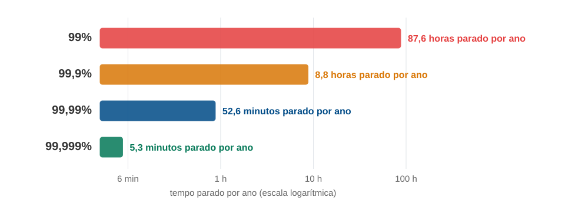
Um ano tem 8.760 horas. Com 99% de disponibilidade, o sistema fica fora 1% delas: 87,6 horas, quase quatro dias. Cada "nove" a mais divide esse tempo por 10. Contratos de serviço (SLA) costumam prometer 99,9% ou 99,99%.
$\text{parado por ano} = (1 - D) \times 8.760\ \text{h}$
$D$: disponibilidade, a fração do tempo em que o sistema está no ar
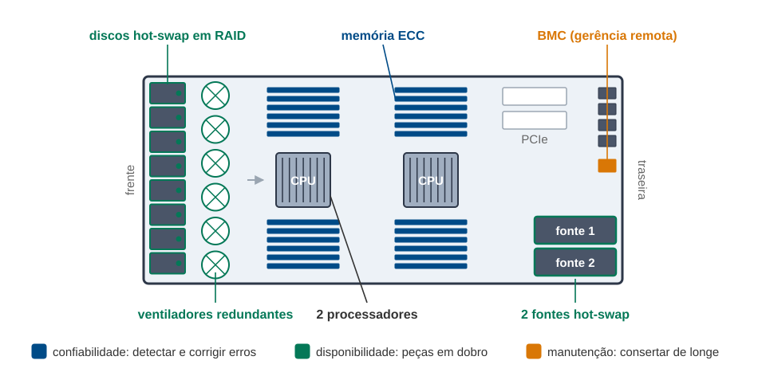
Confiabilidade (Reliability)
Errar pouco e perceber quando erra: a memória ECC corrige um bit trocado.
Disponibilidade (Availability)
Continuar no ar com uma peça quebrada: discos, fontes e ventiladores em dobro.
Manutenção (Serviceability)
Consertar sem desligar e sem ir até lá: hot-swap e o BMC.
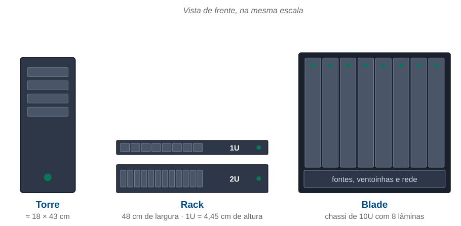
A unidade de altura é o U: 1U = 1,75 polegada = 44,45 mm. A largura do rack é padronizada em 19 polegadas (482,6 mm), o que permite misturar equipamentos de fabricantes diferentes no mesmo armário.
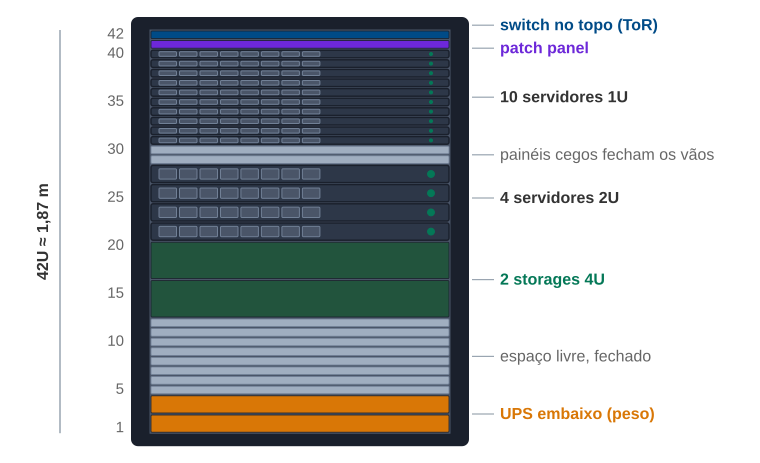
Switch no topo (top of rack): os cabos de rede de cada servidor sobem poucos centímetros.
Equipamento pesado embaixo: nobreak e storage baixam o centro de gravidade.
Painel cego nos espaços vazios: impede que o ar quente de trás volte pela frente (Aula 02).
Densidade: 42U cabem 42 servidores de 1U, mas a energia e o calor costumam acabar antes do espaço.
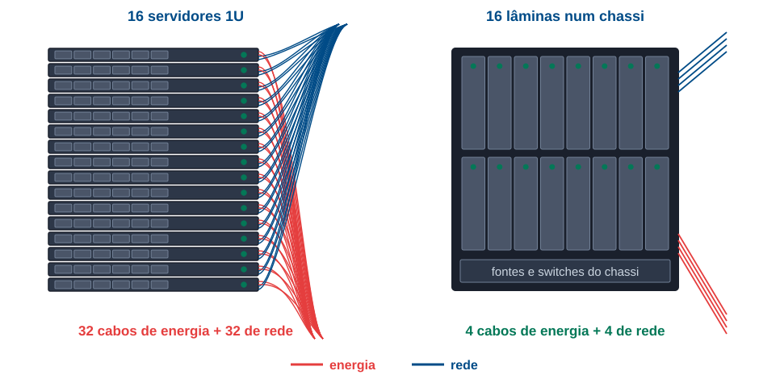
Com 16 servidores de rack, são 2 cabos de rede e 2 de energia cada: 64 cabos. No chassi blade, as lâminas ligam-se a um plano traseiro comum, e só o chassi tem cabos: 8. Em troca, o chassi é um ponto único que concentra calor e prende você a um fabricante.
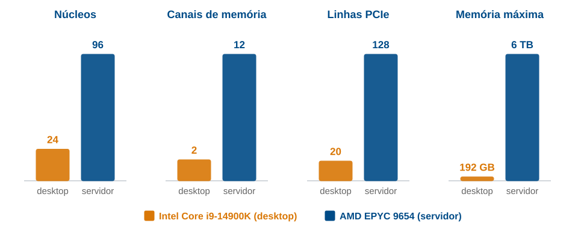
O processador de servidor não é muito mais rápido por núcleo. Ele é mais largo: mais núcleos para atender mais usuários ao mesmo tempo, mais canais de memória para alimentá-los e mais linhas PCIe para discos NVMe e placas de rede. Placas com dois soquetes dobram tudo isso.
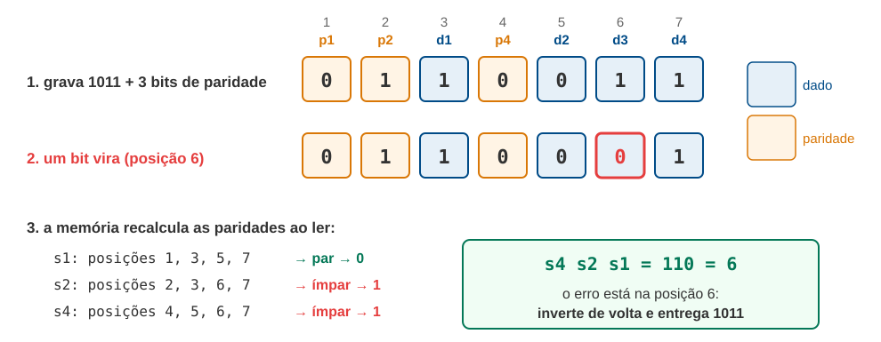
Raios cósmicos e ruído elétrico trocam bits na memória. Num estudo do Google, cerca de 8% dos módulos tiveram ao menos um erro por ano. A memória ECC guarda bits extras de paridade: ao ler, recalcula a paridade e, se não bater, a síndrome diz qual bit trocou.
Na prática
Módulos ECC usam 72 bits para cada 64 de dados (SECDED): corrigem 1 bit e detectam 2. Servidores usam ainda RDIMM, com um buffer que permite mais módulos por canal.
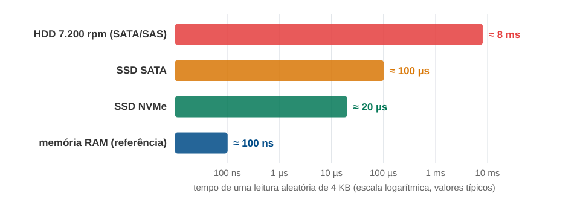
HDD (SATA ou SAS)
Disco girando e braço mecânico. Barato por TB: bom para backup e arquivos grandes.
SSD SATA ou SAS
Memória flash atrás de uma interface feita para disco. Cerca de 80 vezes mais rápido que o HDD.
SSD NVMe
Flash ligado direto nas linhas PCIe do processador. É aqui que as 128 linhas do EPYC fazem diferença.
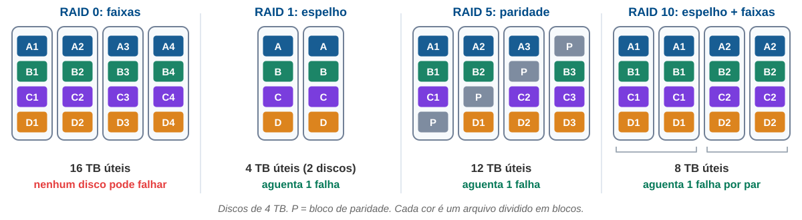
Com 4 discos de 4 TB: RAID 0 divide os dados e não tolera falha; RAID 1 espelha; RAID 5 guarda uma paridade (XOR) espalhada e perde só um disco de capacidade; RAID 10 espelha e depois divide. RAID não é backup: apagar um arquivo apaga nas cópias também.
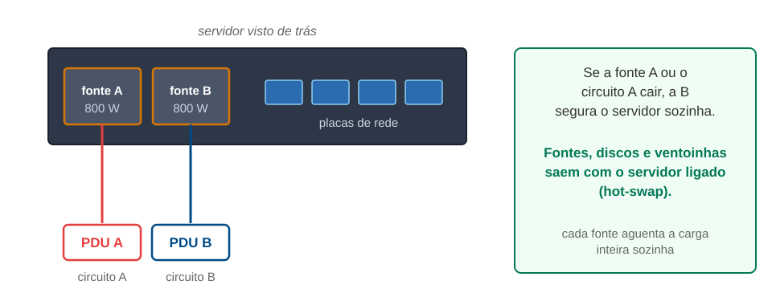
1 + 1
Se o servidor consome 600 W, cada fonte de 800 W aguenta sozinha. Ligadas em circuitos diferentes (A e B), o servidor sobrevive à queima de uma fonte e à queda de um circuito.
Hot-swap
A peça com defeito acende um LED âmbar; o técnico puxa a gaveta e coloca outra com o servidor ligado. Vale para fontes, discos e ventiladores.
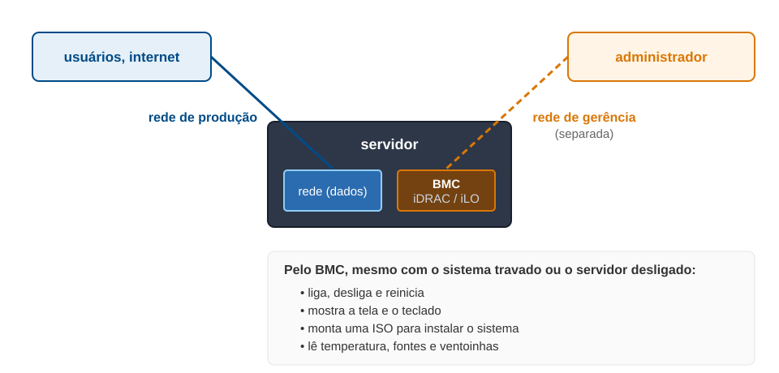
Dentro do servidor há um segundo computador, pequeno, o BMC, com rede própria e energia própria. Ele funciona com o servidor travado ou desligado: você liga a máquina, vê a tela, instala o sistema e lê a temperatura do outro lado do país. O padrão aberto é o IPMI, e o mais novo, o Redfish.
O caso
Uma clínica quer um servidor para o banco de dados dos prontuários: 8 TB úteis, continuar funcionando se um disco queimar e se uma fonte queimar, e a equipe de TI fica em outra cidade. Em duplas, 5 minutos: escolha discos, RAID, memória, fontes e como gerenciar.
Discos
4 × 4 TB em RAID 10 (8 TB, escrita rápida para o banco) ou 3 × 4 TB em RAID 5 (8 TB, mais barato).
Memória
ECC: um bit trocado num prontuário é um dado clínico errado.
Energia
Duas fontes de capacidade suficiente para a carga toda, cada uma em um circuito (A e B).
Gerência
BMC (iDRAC, iLO) numa rede separada: a TI liga, desliga e reinstala de longe.
Atender muitos
Mais núcleos, canais e linhas PCIe.
NVMe para dados quentes.
Rack de 19 polegadas, em U.
Não parar
ECC, RAID e fontes 1 + 1.
Hot-swap e BMC.
Próxima aula: o datacenter
Um servidor de 600 W transforma 600 W em calor. Um rack de 20 servidores esquenta como 12 fornos elétricos ligados. Na Aula 02: como levar energia até o rack e tirar o calor dele.
Barroso, L. A.; Hölzle, U.; Ranganathan, P. The Datacenter as a Computer: Designing Warehouse-Scale Machines. 3ª ed. Morgan & Claypool, 2019. Cap. 1 e 3.
CompTIA. Server+ (SK0-005) Exam Objectives. Domínio 1: instalação e gerenciamento de hardware de servidor.
Patterson, D.; Gibson, G.; Katz, R. A Case for Redundant Arrays of Inexpensive Disks (RAID). SIGMOD, 1988.
Schroeder, B.; Pinheiro, E.; Weber, W.-D. DRAM Errors in the Wild: A Large-Scale Field Study. SIGMETRICS, 2009.
Hennessy, J.; Patterson, D. Computer Architecture: A Quantitative Approach. 6ª ed., 2017. Apêndice sobre armazenamento e confiabilidade.